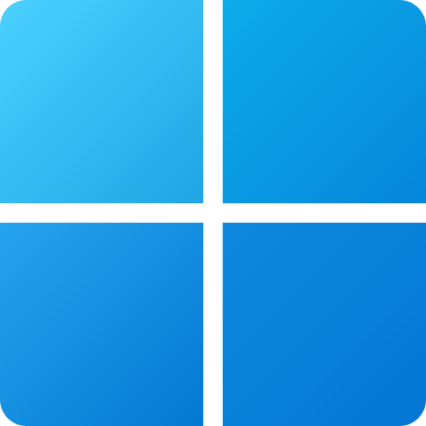

Bu mavzu nima uchun kerak va qachon foydalanamiz?
Hamshira har kuni o‘nlab elektron hujjat bilan ishlaydi: bemorlar ro‘yxati, tahlil natijalari, hisobotlar. Ular tartibsiz bo‘lsa, kerakli hujjatni topish qiyin bo‘ladi, yo‘qolib qolishi ham mumkin.
Fayl va papkalar bilan ishlash nima beradi?
Qog‘oz hujjatlar jildlarga, jildlar esa shkafga qo‘yiladi. Kompyuterda ham xuddi shunday: fayllar papkalarga joylanadi.
- Kerakli hujjat bir necha soniyada topiladi.
- Hujjatlar yo‘qolmaydi va aralashib ketmaydi.
- Hamkasbingiz ham sizning papkalaringizni tushunadi.
- Hisobot topshirish, hujjatni yuborish tezlashadi.
Arxivlash nima beradi?
Arxivlash — ko‘p fayllarni bitta siqilgan faylga jamlash. Keyin uni ochib, fayllarni aynan avvalgi holida qaytarib olish mumkin.
- Diskda va fleshkada joy tejaladi.
- 50 ta faylni bitta fayl qilib Telegram yoki pochtada yuborish oson.
- Eski hujjatlar zaxira nusxa sifatida saqlanadi.
- Arxivga parol qo‘yib, bemor ma’lumotini himoyalash mumkin.
Qachon foydalanamiz? Hamshira ishidan misollar
Bemorlar papkasi ichida bemor familiyasi bilan yangi papka ochamiz (Ctrl + Shift + N) va hujjatlarni shu yerga saqlaymiz.Hisobot_Sentyabr.zip arxiviga jamlab, bitta fayl qilib yuboramiz.2025 papkasini arxivlab, fleshka yoki tashqi diskka zaxira nusxa sifatida o‘tkazamiz.Tahlillar.rar fayli keldi.Fayl, papka va fayl yo‘li
Asosiy tushunchalar: fayl nomi qanday tuziladi, papka nima, kompyuterdagi har bir faylning “manzili” qanday yoziladi.
Fayl nima?
Fayl — kompyuter xotirasida o‘z nomiga ega bo‘lgan, bitta ma’lumotni (matn, jadval, rasm, video) saqlovchi birlik.
Fayl nomi 2 qismdan iborat: asosiy_nom.kengaytma. Kengaytma nuqtadan keyingi qism bo‘lib, fayl turini va uni qaysi dastur ochishini bildiradi.
Masalan: Aliyev_Tahlil.docx — Word hujjati, Bemorlar.xlsx — Excel jadvali, Rentgen.jpg — rasm.
Papka (katalog) nima?
Papka — fayllarni mavzu bo‘yicha guruhlab saqlaydigan “elektron jild”. Papka ichida fayllar va boshqa papkalar (ichki papkalar) bo‘lishi mumkin.
Papkaning kengaytmasi bo‘lmaydi. Papkaning o‘zi ma’lumot saqlamaydi, u faqat fayllarni tartiblaydi.
Barcha fayl va papkalarni ko‘rish va boshqarish dasturi — Provodnik (File Explorer). U Win + E bilan ochiladi.
Fayl yo‘li (manzili)
Har bir faylning kompyuterda aniq “manzili” bor. Uni fayl yo‘li deyiladi: disk nomi, keyin papkalar ketma-ketligi va oxirida fayl nomi. Ular teskari chiziq \ bilan ajratiladi.
Hamshira uchun namunaviy papkalar tuzilmasi
Fayllarni to‘g‘ri nomlash qoidalari
- Nom mazmunni aytib tursin:
Aliyev_Qon_tahlili.pdf,Yangi_hujjat(3).docxemas. - Sanani
2026-09-24yoki01_Yanvarko‘rinishida yozing, shunda fayllar o‘zi tartiblanadi. - So‘zlar orasiga pastki chiziq
_qo‘ying. - Juda uzun nom bermang (fayl nomi 255 belgigacha bo‘ladi).
\ / : * ? " < > |
Fayl va papkalar ustida amallar
Har bir amalni ikki xil bajarish mumkin: sichqoncha bilan (o‘ng tugma → kontekst menyu) yoki klaviatura bilan. Tezkor tugmalar ishni bir necha barobar tezlashtiradi.
Yangi papka yaratish
Nomini o‘zgartirish
Nusxalash (Kopiya)
Ko‘chirish (Kesish)
O‘chirish
Qayta tiklash
Bir nechta faylni belgilash
Faylni qidirish
Papka yaratish va boshqa tezkor tugmalar
Tezkor tugmalar (klaviatura birikmalari) — bir vaqtda bosiladigan tugmalar. Avval birinchi tugma (Ctrl) bosib turiladi, so‘ng qolganlari bosiladi.
Yangi papka yaratish
Provodnikda yoki ish stolida bosilsa, darhol “Yangi papka” paydo bo‘ladi va uning nomi yozishga tayyor turadi. Nomni yozib Enter bosing. N — inglizcha New (yangi) so‘zidan.
Tezkor tugma bilan
Ctrl+Shift+N → nom yoziladi → EnterKontekst menyu orqali
Bo‘sh joyda sichqonchaning o‘ng tugmasi → Yangi (New) → Papka (Folder) → nom → EnterProvodnik menyusi orqali
Provodnikning yuqori panelidagi “Yangi” (+ Yangi / New) tugmasi → Papka → nom → EnterArxivlash nima va u nima uchun kerak?
Arxivlash — bir yoki bir nechta fayl va papkani maxsus dastur yordamida bitta faylga jamlash va siqish (kompressiya). Hosil bo‘lgan fayl arxiv deyiladi.
Arxivlashning maqsadlari
- Joy tejash — fayllar siqilib, diskda kam joy egallaydi.
- Yuborish qulayligi — ko‘p faylni bitta fayl qilib pochta yoki Telegram orqali yuborish.
- Zaxira nusxa — muhim hujjatlarni saqlab qo‘yish (backup).
- Himoya — arxivga parol qo‘yish mumkin.
- Tartib — eski yillar hujjatlarini bitta faylda saqlash.
Asosiy atamalar
- Arxiv — ichida siqilgan fayllar saqlanadigan fayl (
.zip,.rar,.7z). - Arxivlash (siqish) — fayllarni arxivga joylash.
- Arxivdan chiqarish (raspakovka) — fayllarni arxivdan asl holida olish.
- Siqilish darajasi — fayl hajmi necha barobar kichraygani.
- Arxivator — arxivlash dasturi (WinRAR, 7-Zip).
Arxivlash usullari va dasturlari
Arxivni Windows’ning o‘zida ham, maxsus arxivator dasturlar bilan ham yaratish mumkin. Barchasida asosiy ish sichqonchaning o‘ng tugmasi orqali bajariladi.

Windows (ZIP)
Qo‘shimcha dastur shart emas- Fayl yoki papkalarni belgilang.
- O‘ng tugma → “ZIP faylga siqish” (Windows 11) yoki “Yuborish” → “Siqilgan ZIP papka” (Windows 10).
- Arxivga nom bering va Enter.
- ZIP fayl ustida o‘ng tugma → “Hammasini chiqarish” (Extract All).
- Joyni tanlab “Chiqarish” tugmasini bosing.
WinRAR
Eng mashhur arxivator- Fayllarni belgilab, o‘ng tugma → “Arxivga qo‘shish…” (Add to archive).
- Formatni (
RARyokiZIP) va nomni tanlang. - Parol kerak bo‘lsa, “Parol o‘rnatish…” tugmasi → OK.
- O‘ng tugma → “Bu yerga chiqarish” (Extract here) yoki “… papkasiga chiqarish”.

7-Zip
Bepul va kuchli siqadi- Fayllarni belgilab, o‘ng tugma → 7-Zip → “Arxivga qo‘shish…”.
- Format:
7z(eng kuchli siqish) yokizip. - “Shifrlash” bo‘limida parol yozib, OK.
- O‘ng tugma → 7-Zip → “Bu yerga chiqarish” (Extract Here).
Arxiv formatlari
| Kengaytma | Qaysi dastur | Xususiyati |
|---|---|---|
| .zip | Windows, WinRAR, 7-Zip | Eng keng tarqalgan. Har qanday kompyuter va telefonda qo‘shimcha dasturisiz ochiladi. |
| .rar | WinRAR | ZIP’dan yaxshiroq siqadi, parol va ko‘p qismli arxivni qo‘llaydi. Yaratish uchun WinRAR kerak. |
| .7z | 7-Zip | Eng yuqori siqish darajasi, kuchli shifrlash (AES-256). Dastur bepul. |
| .exe (SFX) | WinRAR, 7-Zip | O‘z-o‘zidan ochiladigan arxiv: arxivator dasturi bo‘lmagan kompyuterda ham ochiladi. |
.rar va .7z arxivlarini ham qo‘shimcha dasturisiz ocha oladi. Lekin qabul qiluvchida qaysi Windows borligini bilmasangiz, ZIP formatida yuborish eng ishonchli.
Qaysi fayllar yaxshi siqiladi?
Siqilish fayl turiga bog‘liq. Oddiy matn va jadval ma’lumotlari yaxshi siqiladi. Rasm, video va musiqa fayllari esa yaratilayotganda allaqachon siqilgan, shuning uchun arxivda deyarli kichraymaydi.
Chiziq — fayl hajmi taxminan necha foizga kamayishi. Aniq natija faylning ichidagi ma’lumotga bog‘liq.
Qo‘shimcha imkoniyatlar
Parolli arxiv
Arxiv ochilishi uchun parol so‘raydi. Bemor ma’lumotlarini fleshka yoki internet orqali uzatishda qo‘llanadi. Parolni arxiv bilan bir xabarda yubormang.
Ko‘p qismli (ko‘p tomli) arxiv
Katta arxivni teng bo‘laklarga bo‘ladi (masalan, 3 ta 20 MB lik qism). Pochtaning hajm cheklovi bo‘lganda qo‘l keladi. Ochish uchun barcha qismlar bitta papkada bo‘lishi kerak.
O‘z-o‘zidan ochiladigan arxiv (SFX)
.exe ko‘rinishidagi arxiv. Ikki marta bosilsa, arxivator dasturisiz o‘zi ochiladi. Notanish manbadan kelgan .exe fayllarni ochmang — virus bo‘lishi mumkin.
Tibbiyotda fayllarni saqlash va arxivlash qoidalari
Bemor haqidagi ma’lumot — tibbiy sir. Uni tartibli, xavfsiz va zaxira nusxasi bilan saqlash hamshiraning vazifasi.
Zaxira nusxa: “3-2-1” qoidasi
- 3 ta nusxa: asl fayl va yana 2 ta zaxira nusxa.
- 2 xil qurilmada: masalan, kompyuter va tashqi disk (fleshka).
- 1 tasi boshqa joyda: masalan, bulutli xotirada yoki boshqa binoda.
Kompyuter buzilsa yoki virus tushsa ham hujjatlar saqlanib qoladi.
Qilish kerak
- Har bir bemor yoki oy uchun alohida papka oching.
- Oy yoki yil yakunlanganda papkani arxivlab, zaxira nusxa oling.
- Bemor ma’lumotini tashqariga berishda parolli arxiv qiling.
- Arxivni ochib, fayllar butunligini tekshirib qo‘ying.
Qilish mumkin emas
- Barcha hujjatlarni ish stoliga tartibsiz tashlash.
- Parolni arxiv bilan birga bitta xabarda yuborish.
- Yagona nusxani faqat fleshkada saqlash.
- Notanish arxivlarni antivirussiz ochish.
Bilimni sinash testi
Mavzu bo‘yicha 20 ta test savoli. Ro‘yxatdan o‘tish va ism kiritish talab etilmaydi.
20 talik bilimni sinash testi
Baholash mezonlari: 50% dan past — 2 | 50%–69% — 3 | 70%–84% — 4 | 85%–100% — 5 (A’lo). Natija, to‘g‘ri javoblar va izohlar shu zahotiyoq ko‘rsatiladi.
Testni boshlashNazorat savollari va javoblari
Savol ustiga bosing, javobi ochiladi. Avval javobni o‘zingiz eslashga harakat qiling, so‘ng tekshiring.
1Fayl nima?
Fayl — kompyuter xotirasida o‘z nomiga ega bo‘lgan va bitta ma’lumotni (matn, jadval, rasm, ovoz, video yoki dastur) saqlovchi birlik. Masalan, Aliyev_Tahlil.docx.
2Papka nima va u nima uchun kerak?
Papka (katalog) — fayllarni mavzu bo‘yicha guruhlab saqlaydigan “elektron jild”. Uning ichida fayllar va boshqa papkalar bo‘lishi mumkin. Papka hujjatlarni tartibli saqlash, tez topish va yo‘qotmaslik uchun kerak.
3Fayl nomi qanday qismlardan iborat? Kengaytma nima?
Fayl nomi ikki qismdan iborat: asosiy nom va nuqtadan keyingi kengaytma. Kengaytma fayl turini va uni qaysi dastur ochishini bildiradi: .docx — Word, .xlsx — Excel, .jpg — rasm, .zip — arxiv. Papkaning kengaytmasi bo‘lmaydi.
4Fayl yo‘li (manzili) nima? Misol keltiring.
Fayl yo‘li — faylning kompyuterdagi to‘liq manzili: disk nomi, papkalar ketma-ketligi va fayl nomi. Ular \ belgisi bilan ajratiladi. Misol: D:\Bemorlar\2026\Aliyev_Tahlil.docx — D diskdagi “Bemorlar” papkasi, uning ichidagi “2026” papkasi, undagi “Aliyev_Tahlil.docx” fayli.
5Fayl va papka nomida qaysi belgilarni ishlatib bo‘lmaydi?
Windows 9 ta belgini taqiqlaydi: \ / : * ? " < > |. Bu belgilar tizimda maxsus vazifani bajaradi (masalan, \ fayl yo‘lida papkalarni ajratadi). Ularni yozmoqchi bo‘lsangiz, Windows ogohlantirish chiqaradi.
6Fayllarni nomlashda qanday qoidalarga amal qilish kerak?
- Nom mazmunni aytib tursin:
Aliyev_Qon_tahlili.pdf. - Sanani tartib bilan yozing:
2026-09-24,01_Yanvar. - So‘zlar orasiga
_qo‘ying. - Taqiqlangan belgilarni ishlatmang, nomni juda uzun qilmang (255 belgigacha).
7Yangi papka qanday usullar bilan yaratiladi?
- Tezkor tugma: Ctrl + Shift + N.
- Kontekst menyu: bo‘sh joyda o‘ng tugma → “Yangi” → “Papka”.
- Provodnik menyusi: yuqoridagi “Yangi” tugmasi → “Papka”.
Uchala usulda ham nom yozilib, Enter bosiladi.
8Papka yaratishning tezkor tugmasi qaysi va u qayerda ishlaydi?
Ctrl + Shift + N. U Provodnik (File Explorer) oynasida va ish stolida ishlaydi. Bosilganda “Yangi papka” paydo bo‘ladi va darhol nomini yozish mumkin. Faqat Ctrl + N bosilsa, papka emas, yangi Provodnik oynasi ochiladi.
9Fayl yoki papka nomi qanday o‘zgartiriladi?
Faylni belgilab F2 bosiladi yoki o‘ng tugma → “Nomini o‘zgartirish” tanlanadi. Yangi nom yozilib, Enter bosiladi. Kengaytmani (.docx) o‘zgartirmang, aks holda fayl ochilmay qolishi mumkin.
10Nusxalash va ko‘chirishning farqi nimada?
Nusxalash (Ctrl + C, keyin Ctrl + V) — fayl eski joyida qoladi, yangi joyda uning nusxasi paydo bo‘ladi. Natijada fayl ikkita bo‘ladi.
Ko‘chirish (Ctrl + X, keyin Ctrl + V) — fayl eski joyidan olinib, yangi joyga o‘tadi. Fayl bitta bo‘lib qoladi.
11Delete va Shift + Delete ning farqi nima?
Delete — fayl Savatga (Korzina) tushadi, keyin uni tiklash mumkin.
Shift + Delete — fayl Savatga tushmay, butunlay o‘chiriladi. Uni oddiy yo‘l bilan tiklab bo‘lmaydi.
12Adashib o‘chirilgan fayl qanday tiklanadi?
- O‘chirgan zahoti Ctrl + Z bosiladi — amal bekor qilinadi.
- Yoki ish stolidagi Savat ochiladi, fayl ustida o‘ng tugma → “Tiklash”. Fayl o‘zining eski joyiga qaytadi.
Shift + Delete bilan yoki fleshkadan o‘chirilgan fayllar Savatga tushmaydi.
13Bir nechta faylni birdaniga qanday belgilash mumkin?
- Ctrl bosib turib fayllar ustiga bosiladi — tanlab-tanlab belgilanadi.
- Birinchi faylni bosib, Shift bosib turib oxirgisini bosish — oradagi hammasi ketma-ket belgilanadi.
- Ctrl + A — papkadagi hammasi belgilanadi.
- Sichqoncha bilan fayllar ustidan ramka chizish ham mumkin.
14Kerakli faylni qanday tez topish mumkin?
Provodnikda Ctrl + F yoki F3 bosiladi (yoki yuqori o‘ng burchakdagi qidiruv maydoni) va fayl nomining bir qismi yoziladi, masalan “Aliyev”. Qidiruv ochiq papka va uning barcha ichki papkalarida bajariladi. Fayllar to‘g‘ri nomlangan bo‘lsa, qidiruv ancha oson bo‘ladi.
15Arxivlash nima?
Arxivlash — bir yoki bir nechta fayl va papkani maxsus dastur yordamida bitta faylga jamlash va siqish. Hosil bo‘lgan fayl arxiv deyiladi (.zip, .rar, .7z). Arxivdan fayllarni aynan asl holida qaytarib olish mumkin.
16Arxivlash nima uchun kerak?
- Joy tejash — siqilgan fayl kam joy egallaydi.
- Yuborish qulayligi — ko‘p faylni bitta fayl qilib pochta yoki Telegram orqali yuborish.
- Zaxira nusxa — muhim hujjatlarni saqlab qo‘yish.
- Himoya — arxivga parol qo‘yish.
- Tartib — eski hujjatlarni bitta faylda saqlash.
17Hamshira arxivlashdan qachon foydalanadi? Misollar keltiring.
- Oylik hisobotning ko‘p fayllarini bosh hamshiraga bitta fayl qilib yuborishda.
- O‘tgan yilgi kasallik tarixlarini zaxira nusxa sifatida fleshka yoki diskka saqlashda.
- Bemor ma’lumotlarini boshqa bo‘limga parolli arxiv qilib uzatishda.
- Laboratoriyadan kelgan arxivlangan tahlil natijalarini ochishda.
18Qanday arxivlash dasturlarini bilasiz?
- WinRAR — eng mashhur arxivator, RAR va ZIP arxiv yaratadi (sinov muddati 40 kun).
- 7-Zip — mutlaqo bepul, 7z formatida eng kuchli siqadi.
- Windows’ning o‘zi — qo‘shimcha dasturisiz ZIP arxiv yaratadi va ochadi.
19Eng ko‘p tarqalgan arxiv formatlari qaysilar?
.zip — eng keng tarqalgan, hamma joyda qo‘shimcha dasturisiz ochiladi; .rar — WinRAR formati, yaxshiroq siqadi; .7z — 7-Zip formati, eng yuqori siqish darajasi. Shuningdek, o‘z-o‘zidan ochiladigan .exe (SFX) arxivlar ham bor.
20Windows’da qo‘shimcha dasturisiz ZIP arxiv qanday yaratiladi?
Fayl yoki papkalar belgilanadi, o‘ng tugma bosiladi va “ZIP faylga siqish” tanlanadi (Windows 10 da: “Yuborish” → “Siqilgan ZIP papka”). Hosil bo‘lgan arxivga nom berilib, Enter bosiladi.
21Arxivdan fayllar qanday chiqariladi?
- Windows: ZIP ustida o‘ng tugma → “Hammasini chiqarish” (Extract All) → “Chiqarish”.
- WinRAR: o‘ng tugma → “Bu yerga chiqarish” yoki “… papkasiga chiqarish”.
- 7-Zip: o‘ng tugma → 7-Zip → “Bu yerga chiqarish”.
Parolli arxiv bo‘lsa, parol so‘raladi.
22Qaysi fayllar yaxshi siqiladi, qaysilari deyarli siqilmaydi? Nega?
Yaxshi siqiladi: matnli fayllar (.txt, .csv) va siqilmagan rasmlar (.bmp) — hajmi bir necha barobar kamayadi.
Deyarli siqilmaydi: .jpg, .mp4, .mp3, chunki ular yaratilayotganda allaqachon siqilgan. .docx, .xlsx, .pdf ham qisman siqilgan, shuning uchun o‘rtacha kichrayadi.
23Arxivga parol qanday qo‘yiladi va nima uchun?
WinRAR’da “Arxivga qo‘shish” oynasidagi “Parol o‘rnatish…” tugmasi, 7-Zip’da “Shifrlash” bo‘limi orqali parol yoziladi. Parol bemor ma’lumotlari maxfiyligini saqlash uchun kerak: fleshka yo‘qolsa yoki fayl begona odamga tushsa ham, parolsiz uni ochib bo‘lmaydi. Parolni arxiv bilan birga bitta xabarda yubormaslik kerak.
24Zaxira nusxa (backup) nima? “3-2-1” qoidasini tushuntiring.
Zaxira nusxa — muhim fayllarning yo‘qolishdan saqlash uchun olingan qo‘shimcha nusxasi. “3-2-1” qoidasi: ma’lumotning 3 ta nusxasi bo‘lsin, ular 2 xil qurilmada saqlansin (kompyuter va fleshka yoki disk), va 1 tasi boshqa joyda turgan bo‘lsin (bulutli xotira yoki boshqa bino).
25Ko‘p qismli arxiv va o‘z-o‘zidan ochiladigan arxiv nima?
Ko‘p qismli (ko‘p tomli) arxiv — katta arxivni bir necha teng bo‘lakka bo‘lish. Pochta yoki fleshka hajmi yetmaganda ishlatiladi. Ochish uchun barcha qismlar bitta papkada bo‘lishi kerak.
O‘z-o‘zidan ochiladigan arxiv (SFX) — .exe ko‘rinishidagi arxiv. Arxivator dasturi bo‘lmagan kompyuterda ham ikki marta bosilsa ochiladi.